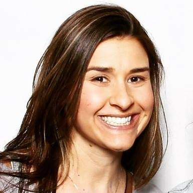
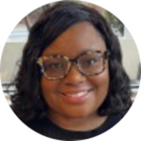
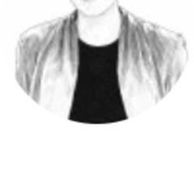
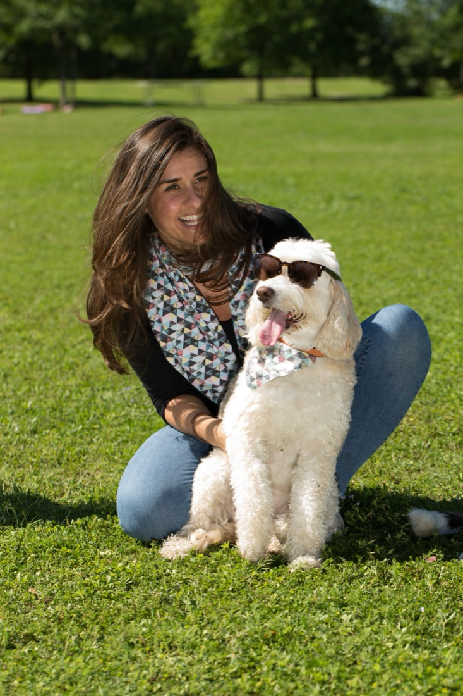

Position
Find the sharpest true thing about a product and say it plainly. Positioning, messaging, narrative and competitive framing.
Povio · Triplebyte · amazee.ioI'm Nicole DeAngelis. I take products from zero to one, then grow them. I've led go-to-market at YC-backed startups, ran a Webby-honored relaunch for a $30B manufacturer, founded four companies, and I build AI products myself.

Brands and teams I've marketed for
Also Smartsheet, Matterport, Boehringer Ingelheim, the Australian Government, Continental Airlines, L'Oréal, Alcon, Bausch + Lomb, Texas Oncology and NRDC.
What I do
Most teams hire for positioning, launches, web and demand gen separately. I do all four and connect them, so the story a buyer hears matches the product they get. I've done it as the first marketing hire, as a director with a $500K budget and a team of agencies, and as a founder with no budget at all.
Find the sharpest true thing about a product and say it plainly. Positioning, messaging, narrative and competitive framing.
Povio · Triplebyte · amazee.ioTake new products to market with the pricing, packaging, sales enablement and launch moment to back them up.
#1 on Product HuntTurn websites into pipeline with conversion-focused web, case study libraries, lifecycle email and demand gen.
10× inbound · 2× win rateShip working products, not just decks. I build AI apps with Claude Code, Lovable and Replit, and market them myself.
5 AI products shippedSelected work
Each screen is a recording of the live work. The numbers are what it moved.
As Director of Marketing (promoted from Sr. Product Marketing Manager), I led the move from a marketplace to subscriptions and product-led growth, while launching Triplebyte Magnet, an AI tool for sourcing engineers.
As Senior Digital Marketing Manager, I led digital strategy and the Webby-honored relaunch of flex.com for a company that builds products for Apple, Nike and Google. The work spanned 12 industry verticals and dozens of stakeholders.
As the first marketing hire, I ran full-funnel marketing and business development. Customer stories with Smartsheet, Matterport and the Australian Government gave enterprise buyers proof they could trust a small team.
Povio built excellent software but sounded like every other agency. As GTM consultant, I worked with the founders to clarify what made them different, then rebuilt the site around it.
I designed, built and launched JoyLoop on my own with AI dev tools and APIs. It turns any moment into an animated card with custom art, GIFs, music and a personal message. Doing both jobs taught me what AI products need from marketing.
AI lab
I build working prototypes with Claude Code, Lovable and Replit to test ideas fast. Each one has a live app, a brand and a launch page, made end to end by me.
Paste any event link from Eventbrite, Luma or Partiful. AI pulls out the details and adds it to your calendar in one tap.
Open the app ↗Turns real bugfixes into policies that stop AI coding agents from repeating the same mistakes. Product and marketing site shipped in one sprint.
Open the app ↗Upload a photo of your yard and get a water-wise landscape plan, a shopping list and $2,000+ in Austin rebates, all in one flow.
Open the app ↗Compares ad copy variants against visual styles in realistic LinkedIn mocks, so clients approve creative in minutes instead of days.
Open the app ↗Ventures
Founding taught me to ship with no budget, sell before the product is finished, and listen hard to customers. I bring all three to every team I join.
Small-group matchmaking that became a resident retention product for multifamily buildings.
800+ users · 150+ repeat attendees · 10+ events a week
Watch the video ↗Small-group matchmaking for real-life friendship, built and launched solo on no-code tools with venue partners.
250+ paying customers · $10K seed fund winner
Mix-and-match dog collars and leashes with matching accessories for their people, launched with crowdfunding and a live event.
$3K presales · Google Austin Fast Start finalist · Austin Woman Magazine
Experience
I started in digital production at New York and Austin agencies, moved in-house to lead marketing at a Fortune 500 and three YC-backed startups, and have founded four companies along the way.
AI-powered personalized animated greetings, built solo.
Small-group matchmaking for resident retention.
Positioning, messaging and web for a 600-person software studio.
Series B HR-tech SaaS, acquired by Karat.
IRL friendship matchmaking, launched solo on no-code tools.
Open-source developer platform, acquired by Mirantis.
Digital strategy for a $30B global manufacturer.
Grew to 1K+ members and 50+ events, sponsored by Google, Box and WeWork.
$1M web budgets for Dell, Budweiser, Alcon, Johns Hopkins and Union Pacific.
Web and ad campaigns for Continental Airlines, L'Oréal Redken and NRDC.
Praise
18 recommendations from managers, sales leaders, designers and peers, from my agency days to Triplebyte.
“Nicole's rare combination of skills in research, messaging, and campaign execution yield real business results.”
“Nicole's outstanding leadership was exemplified in the successful launch of our new product, Magnet.”
“Nicole owned an incredibly wide scope of marketing at Triplebyte across content, SEM, product marketing, and user research.”
“She's great at connecting disparate ideas and people in ways that no one else would have imagined—a strategist dressed in producer's clothing.”
I had the pleasure of working with Nicole as the Marketing Director at Triplebyte. In this role, Nicole made significant contributions to our product and go-to-market efforts.
I had the immense pleasure of working alongside Nicole at Triplebyte, where she led the marketing department with remarkable skill and dedication.
Nicole owned an incredibly wide scope of marketing at Triplebyte across content, SEM, product marketing, and user research.
I had the pleasure of working with Nicole at Triplebyte, where she played a critical role in overseeing our marketing efforts as well as excelling in her official role as a Product Marketer.

Gayla GaluszkaConnect Partnerships @ MeterTriplebyte · 2023 · worked together on the same teamI had the privilege to manage Nicole and was always impressed with her ability to anticipate business needs and create the right action plans to deliver great results.
Nicole lights up a room. She is smart and charismatic. An asset to any team. Nicole has a flair for effective communication across any platform. She is assertive and possesses a lot of leadership skills.

Jessica LowryHuman-Centered AI Enablement | Innovation & Transformation2015 · managed NicoleI had the privilege of working with Nicole at EnviroMedia and HCB Health. Her approach to project management is people-focused and thoughtful.
Nicole was a joy to work with on the Mason Zimbler team. She proactively brought innovative solutions forward and collaboratively approached tasks.
I worked with Nicole in a fast-paced, stressful environment. Regardless of the pressure to meet moving deadlines, her ability to remain calm and always have a smile, made it an ongoing pleasure to work with her.
I had the great fortune of working with Nicole as our Project Manager at Bakery.
Nicole was an absolute pleasure to work with on a daily basis. She not only motivated the group to manage project but took the initiative when aspects of the project needed extra assistance.
Nicole was an exceptional Interactive Producer at Bakery. She was a true team player who helped every team member achieve project goals efficiently and worked tirelessly to exceed clients' expectations.
Nicole founded SheSays Austin and has done an awesome job building the organization from the ground up and recruiting a loyal following of attendees.
Nicole is a project manager you can trust. She understands a diverse range of tactics and can handle multiple projects simultaneously.
Nicole and I worked together when I was a senior interactive producer at Digital Pulp.
Nicole is a skillful coordinator. She is very organized and has lined up great monthly events with awesome speakers and venue locations. She is very welcoming and engaging with the group's members.
Nicole is an expert. As Project Manager on our team, she led each new project with accuracy, professionalism and dedication.
Through Nicole's hard work as a PM, we were able to successfully complete a massive, 300+ page cancer education website, numerous apps, iBooks, digital advertising and more.
All recommendations come from my LinkedIn profile.

Modeling matching Joey Ro accessories with my favorite coworker.
About
I've spent my career where a good product meets a market that doesn't understand it yet. I've done that as a first marketing hire, as a director at a YC company, as the digital lead on a Fortune 500 rebrand, and as a founder four times over.
The common thread is clarity. I find the one thing a buyer needs to believe, then build everything around it: the message, the site, the launch and the pipeline. These days I also build the product, using AI tools that let one person ship what used to take a team.
I'm a 200-hour certified yoga teacher, a photographer and a visual artist. I'm based in Austin and work remotely.
I'm looking for founding marketer, full-stack marketing, product marketing and growth roles, as a hands-on IC or as a leader. I also take on select advisory projects.
nicole.deangelis@gmail.com
Based in Austin · I reply within 24 hours.